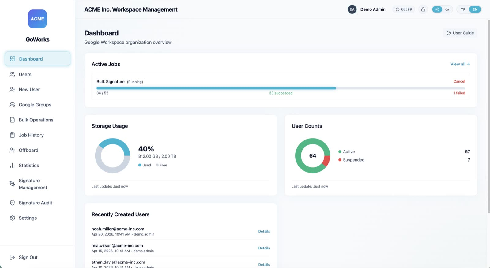
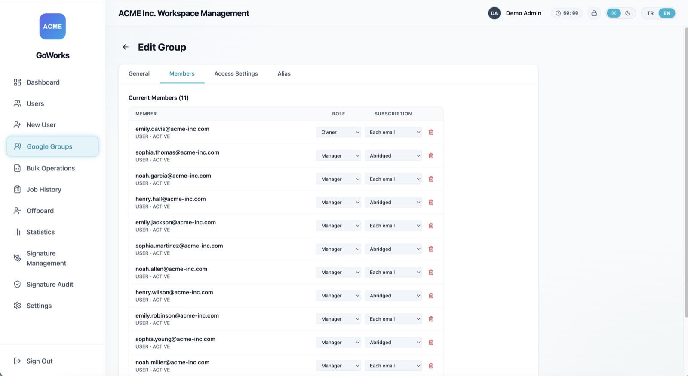
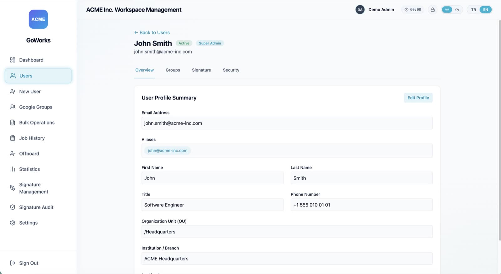

Bulk Google Workspace admin without writing scripts
Offboarding, Gmail signature deployment, and group management — from a desktop app that runs entirely on your machine. No server, no vendor backend, no telemetry.
Installers are unsigned — verify the checksum before you run one.
Two tools, opposite extremes
Google Workspace lifecycle work is repetitive, high-frequency, and unforgiving. The Admin Console is a GUI with no bulk workflow. GAM is enormously capable — and expects you to write and maintain scripts. There is very little in between.
| Capability | Admin Console | GAM / GAMADV-XTD3 | GoWorks |
|---|---|---|---|
| Bulk work from a CSV | ✗ | write a script | guided wizard |
| Preview before executing | ✗ | ✗ | row-by-row validation |
| Gmail signature templating | ✗ | partial | editor + drift audit |
| Live progress, cancel, retry | ✗ | ✗ | ✓ |
| Learning curve | Low | High CLI + scripting | Low |
| Runs where | Google's cloud | Your terminal | Your machine |
GAM is excellent and far broader in scope — if you already have mature GAM automation, keep it. GoWorks is for the admin who wants the same bulk reach without maintaining scripts, and without granting a SaaS vendor domain-wide access to the tenant.
You see the whole job before any of it runs
Every bulk action stops at an analysis step. GoWorks reads your CSV, resolves each address against the tenant, and tells you exactly what it found — before a single account is touched.
Rows that can't run are held back rather than failing halfway through. Nothing about a suspension or a deletion is reversible, so the preview is not a convenience.
- daniel.reed@acme-inc.com ready
- priya.nair@acme-inc.com ready
- tomas.borg@acme-inc.com ready
- lena.fischer@acme-inc.com ready
- omar.haddad@acme-inc.com not found
- grace.okoye@acme-inc.com ready
- kenji.sato@acme-inc.com ready
- marta.silva@acme-inc.com ready
- adam.kovacs@acme-inc.com ready
Try it without a Google account
Demo mode is a fully clickable prototype running against an in-memory fixture — no Workspace account, no Service Account, no master password, no internet. Judge whether it fits your workflow before you set up a Google Cloud project.
git clone https://github.com/umutcankurt/goworks.git && cd goworks
npm install && npm run demo:en
Prefer Turkish? npm run demo starts the same prototype in Turkish.
What it does
Bulk operations
Suspend, delete, push signatures, or add to groups from a CSV. Every row is validated before anything runs. Cancellable jobs, rate limiting, automatic retry, live progress.
Offboarding wizard
Deprovision a departing employee as a guided flow instead of a checklist: suspend, set forwarding, remove from groups — without forgetting a step.
Signature deployment
A template editor with reusable tokens and image upload, domain-wide deployment via a Service Account, and a drift audit that finds users whose signature no longer matches.
Groups & users
Full CRUD for groups, members, roles, aliases, and access settings. Search and edit profiles, manage aliases and forwarding, suspend and restore accounts.
Encrypted local vault
The Service Account key and Google refresh token are encrypted at rest with Argon2id + AES-256-GCM, behind a master password with configurable idle auto-lock.
Multi-tenant by config
Company name, logo, sender name, and allowed domain are settings — not a rebuild. One build works for any organization, which matters if you manage several.
Captured in demo mode
A fictional tenant, acme-inc.com — no real customer data anywhere on this page.
Offboarding — a guided flow instead of a manual checklist
Signature editor — reusable tokens, live preview, media library

Dashboard — storage, user counts, live job progress

Group edit — members and roles, access settings, aliases

User detail — profile, aliases, org unit, last login
Where your data goes: nowhere
- No GoWorks backend. There is no service to sign up for, and no server to host. A local SQLite database and an in-process job queue, that's it.
- Your own OAuth client. You create it in your Google Cloud project. Your quota, your tokens, your audit log — every action is attributed to the admin who performed it.
- No telemetry. The app reports nothing. Neither does this page: no analytics, no CDN, no third-party requests. The font is served from this origin.
- Encrypted at rest. Service Account key and refresh token live in an Argon2id + AES-256-GCM vault. Factory reset overwrites it before deletion and reclaims database free pages and WAL.
- Auditable. Apache-2.0. For a tool that holds super-admin, being able to read the source is the point.
The binaries are not signed — read this first
GoWorks releases are not signed with an Apple Developer or Windows code-signing certificate, so your OS will warn you that the developer cannot be verified. That is expected, and we would rather say so here than have you meet it at the dialog.
Because this app asks for Google Workspace super-admin access, don't click through that warning on our say-so. Verify the download first.
# macOS / Linux
shasum -a 256 GoWorks-Mac-0.8.1-Installer.dmg
# Windows (PowerShell)
Get-FileHash .\GoWorks-Windows-0.8.1-Setup.exe -Algorithm SHA256| v0.8.1 file | SHA-256 |
|---|---|
GoWorks-Mac-0.8.1-Installer.dmg | 2748beea…1b43bb8f |
GoWorks-Windows-0.8.1-Setup.exe | f5a73f6a…f558f8cb31 |
Full checksums are in the README,
and GitHub records the same digests on the release assets. If you would rather trust nothing at
all — the better instinct — the source is Apache-2.0 and npm run build produces the
same installers locally.
Start with the demo. It costs you nothing.
No account, no credentials, no install. If the workflow fits, the installer is one click away.
Apache-2.0 · unsigned — verify the checksum